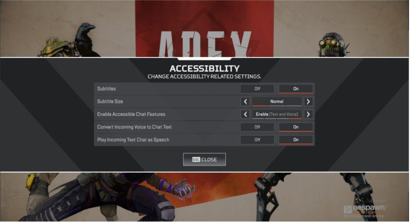
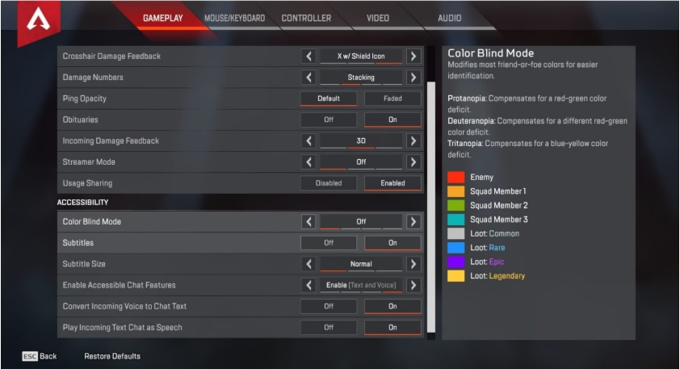
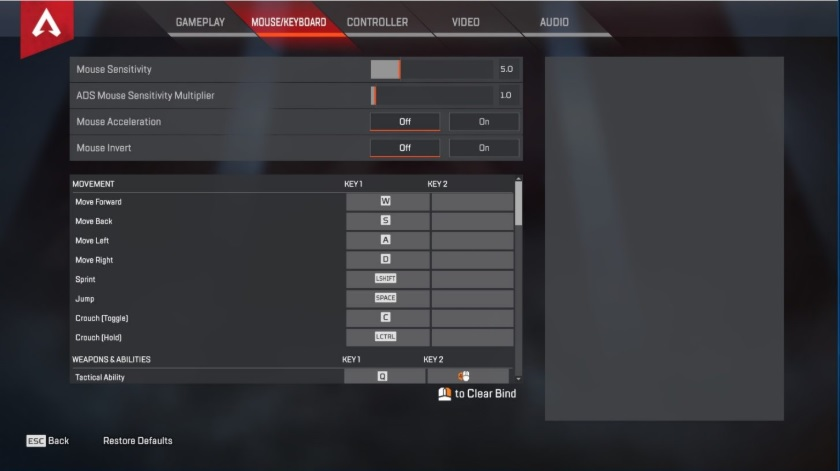
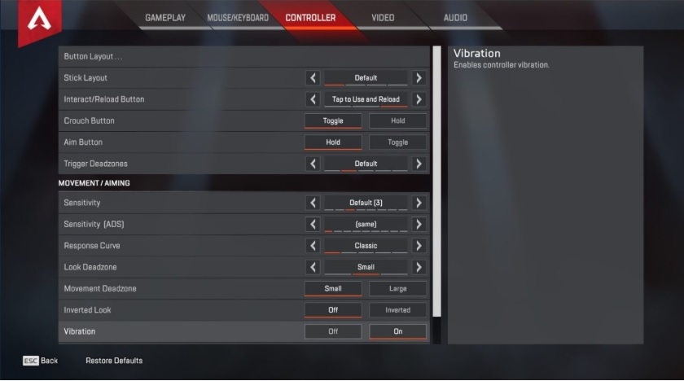
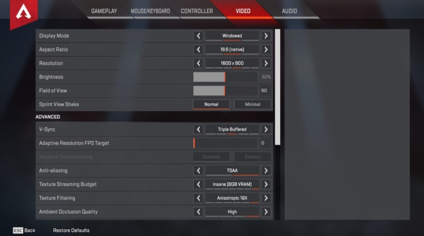
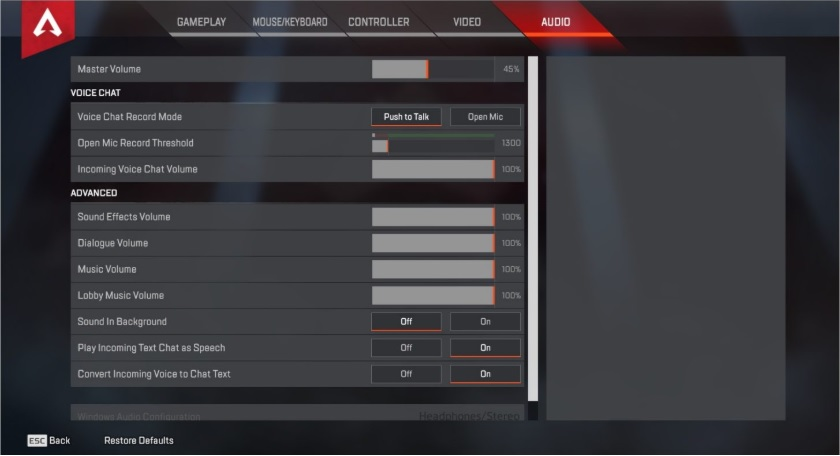

Features
|  | ACCESSIBILITY OPTIONS MENU
After launching the game, players will land on the Apex Legends home screen. There is an Accessibility Options menu on this screen where players can adjust accessibility settings. These settings include turning on subtitles, adjusting the size of the subtitles, enabling accessible chat features such as text and voice, converting incoming voice to chat text, and playing incoming chat text as speech. There are additional colorblind accessibility features through the settings menu in the game. |
|||
|  | IN-GAME ACCESSIBILITY OPTIONS
After navigating past the Apex Legends home screen, the accessibility options can be found in the settings menu under the GAMEPLAY tab. The accessibility feature options in this menu are the same as the earlier menu, with the addition of three different color blind modes that compensate for two different red-green color deficiencies and a blue-yellow color deficiency. GAMEPLAY SettingsThe gameplay settings are primarily focused on visual feedback within the game. Among theoptions in this menu, players can adjust how damage numbers appear on their character, turn on or off button hints, and modify the ping opacity. Modifying the settings from the default option may impact visual clarity or ease-of-play. |
|||
|  | MOUSE/KEYBOARD SETTINGS
The mouse and keyboard settings allow players to adjust a variety of features including movement, using and accessing weapons and special abilities, communication, and mouse sensitivity. You have the option of adjusting key bindings for controlling your character’s movements, communication with others, and use of weapons and abilities. You also have the option of turning on mouse invert and mouse acceleration as well as adjusting the mouse sensitivity when moving or aiming. |
|||
|  | CONTROLLER SETTINGS
Gamers on PC can use an Xbox controller or other generic controller of their choice in lieu of a keyboard and mouse to control their character and interact with their environment in the game. You have the ability to adjust the behavior of the buttons and the stick controls. Additionally, you can alter the sensitivity of the controller as it relates to your character’s in-game movements and aiming. You can also turn controller vibration on or off. When vibration is turned on, the controller will vibrate when certain actions occur in the game. |
|||
|  | VIDEO SETTINGS
The video settings allow players to adjust how they visually interact with the game. Apex Legends can be played in full screen and windowed mode, with options for adjusting the aspect ratio display resolution and brightness, and field of view. Display resolution and brightness can be adjusted to accommodate for player needs. Field of view refers to how zoomed out the view is. By default, this is set to 90. It is not recommended to set this above 90 as in-game performance issues and visual problems may occur. |
|||
|  | AUDIO SETTINGS
The audio settings allow players to adjust the volume for a variety of aspects within the game. In addition to adjusting the master volume, you have the option of increasing or decreasing specific sounds within the game including sound effects, dialogue, music, and lobby music. There is also the option of turning on or off the background sounds. Sound effects are sounds related to effects in the game, such as explosions, weapons, and character movements. Dialogue refers to characters speaking and other forms of text, such as subtitles, in the game. Lobby music refers to the musical score in the lobby area. The lobby is where you and your team sync up prior to joining a match. |
|||